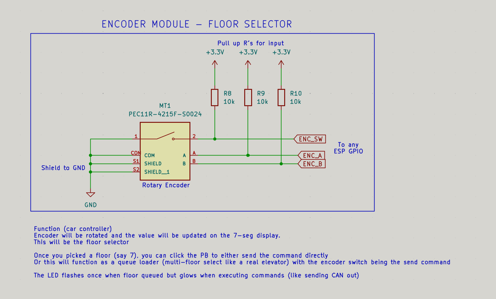
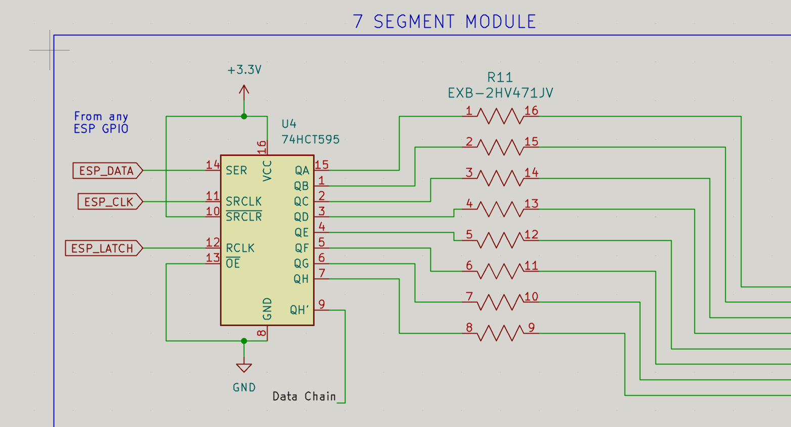

Began working on the user interface portion of the project,
including LEDs, buttons, rotary encoder planning, and a 7-segment
display schematic for showing the elevator's current floor.
I began working on my part of the project, which focuses on the user
interface: LEDs and buttons. I proposed using a 7-segment display to
update and display what floor the elevator is currently on, similar to
the floor displays used in real elevators.
We also discussed potentially implementing more than the original
three floors, possibly expanding to six. I believe having 6-7 buttons
on a small PCB would become messy, so a rotary encoder seemed like a
good option for selecting the desired floor cleanly.

Rotary encoder schematic proposed for selecting elevator
floors
The idea is that the rotary encoder would be turned to choose a floor,
and then a button press would confirm and queue that floor. This would
be similar to how real elevators allow multiple floors to be queued.
Researched an LED driver for the 7-segment display
Another job of mine was designing a schematic for implementing a
7-segment display. I initially considered using a more complicated IC:
AS1115-BSST.
The AS1115-BSST is an LED driver
that can be powered with 3.3 V, which is ideal because the ESP32 uses
3.3 V logic. It also communicates using I2C, which would
make the interface fairly simple.
Below are the DigiKey page and datasheet reference images for this IC:
After consulting MR, it was decided to use a shift register instead.
This is simpler to implement, we are already familiar with shift
registers from a previous LED matrix project, and they are much
cheaper. Each shift register is about $0.50 compared to roughly $2-3
per piece for the AS1115.
The shift register that will likely be used is the
74HC595. This is an 8-bit
serial-in/serial-or-parallel-out shift register. It receives data from
the ESP32, is clocked, and then the output is latched.
From the shift register, the output is fed through a resistor array
instead of individual resistors, since using many separate resistors
would be annoying and less clean. The resistor array then feeds into
the 7-segment display.

7-segment display schematic using a 74HC595 shift register and
resistor array